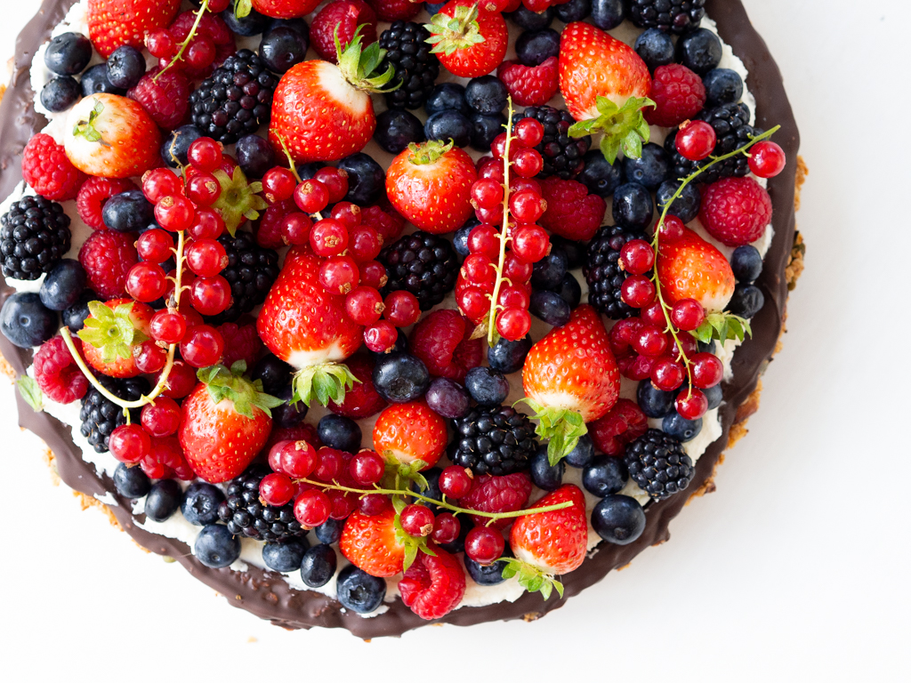

Nordic Granola Berry Pie:

If you want to make something really delicious for yourself or impress your friends and family, then you are landed on the right page. This Nordic Granola Berry Pie is easy to make and the result is nothing but fantastic.
A crisp granola crust covered with a layer of dark chocolate and topped with creamy Mascarpone cheese and fresh berries - simply delicious and mouthwatering good. Continue reading on and learn how easy it is to make this Nordic Granola Pie.
Granola crust:
- 4 dl oats (fine or coarse)
- 1 dl pumpkin seeds
- 1 dl almonds
- 1 tsp vanilla powder (or essence)
- 1/2 tsp salt
- 4 tbsp honey
- 50 g butter (melted)
Topping:
- 200 g dark chocolate
- 250 g Mascarpone
- 2 dl heavy cream
- 1 tbsp honey
- 1 tsp vanilla powder (or essence)
Instructions
Granola crust:
- In a large bowl, mix the oats, pumpkin seeds, coarsely chopped almonds, vanilla powder and salt.
- Add the melted butter and honey. Mix it all together.
- In a buttered pie pan add the granola mixture. Use the backside of a tablespoon to distribute and compress the granola into an even pie crust.
- In a 150 C (300 F) preheated oven, bake the granola crust for about 30 minutes. When done, let it cool off.
Granola Berry Pie:
- Gently melt the dark chocolate and use it to cover the bottom of the granola crust. Let the chocolate cool off and harden.
- In a bowl, whip the Mascarpone, heavy cream, honey and vanilla powder into an airy and wonderful cream.
- When you are ready to serve the pie, distribute the Mascarpone mixture on the crust and top it with all kinds of your favorite fresh berries.
Home